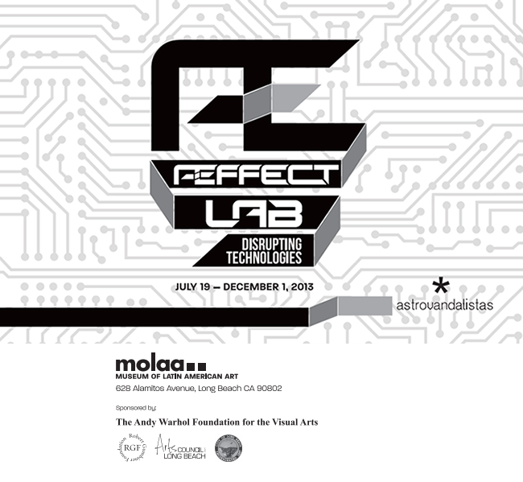

Æffect Lab _ Tecnologías Disruptivas
Disruptive will be any event or situation with the potential capability of bursting into the psychism and producing reactions that alter its ability of integration and elaboration.
M. Benyakar.
Æffect Lab is a framework that encourages the creation of affective models of communication that are specific to a location, environment or group of people.
The project consists of research and creation of a free communication network based on affectivity: a parallel network to the Internet in which cooperation and human-human communication develop and take place.
Æffect Lab functions under the logic of urban hacking: the application of technological resources to modify urban elements, augmenting them with the ability for telematic operation.
This network is composed of several communication prototypes, used to insert virtual messages in the physical public space. The prototypes are: AST:Arma Sonora Telemática (Telematic Sound Weapon), VLE:Ventana de Lecturas Efímeras (Ephemeral Reading Window), CAU:Campo de Afinidades Ubicuas (Ubiquitous Affinities Field), and ISO:Instrumento Sintetizador de Opinión (Instrument for Synthesizing Opinion). For the core of this network, we developed a module called LocalNet, which has the capability to receive messages sent to the Æffect Lab network and redirect them to the prototypes. This enables the network to receive messages from our web application, SMS text messages, Twitter, and local autonomous networks running a local web application.
The prototypes presented were developed based on our experiences and interests, and serve as examples of what can be done with such a framework. It’s the start of a conversation about the integrative possibilities of this type of communication tools in diverse communities, and a questioning of the use of these systems.
What are the social and psychological limits of communications mediated by commercial technologies?
What physical and virtual distances emerge from these network-imposed limits?
How can we ensure collective participation in social structures that are in constant transformation, where the speed of technological development is constantly pushing our own limits of understanding and knowledge?
With this exhibition we start the project, displaying the first stage of our research and development, which will continue during the next couple of months at workshops and interventions that will take place in Mexico and the United States.